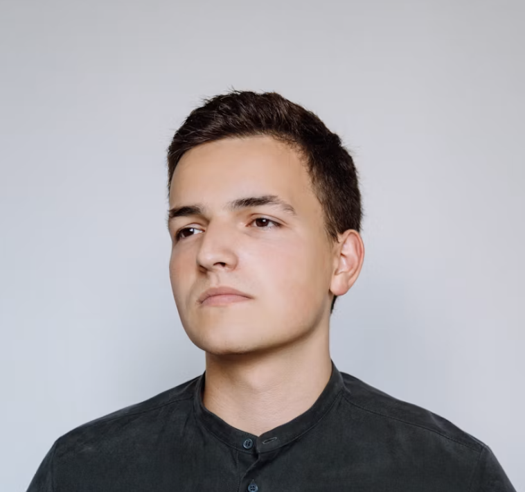
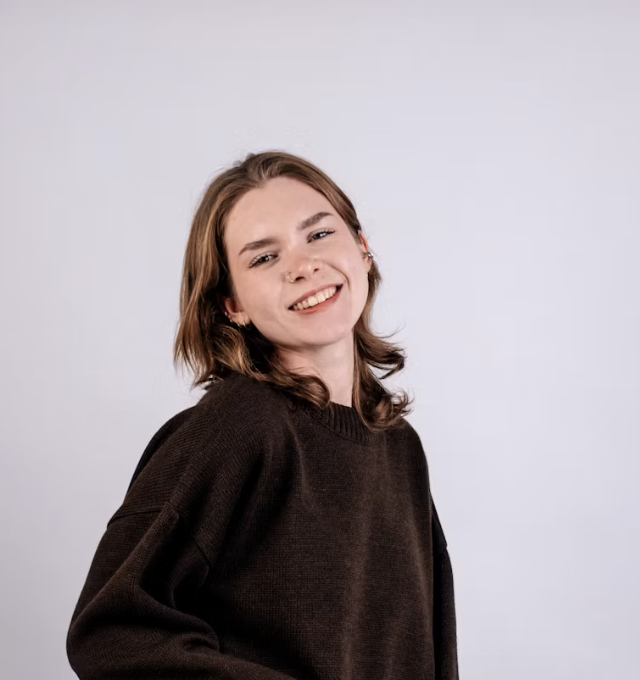
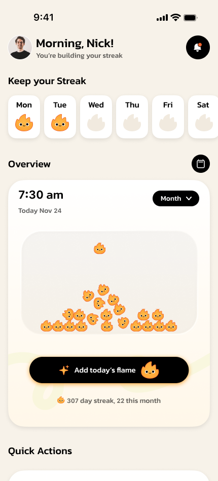
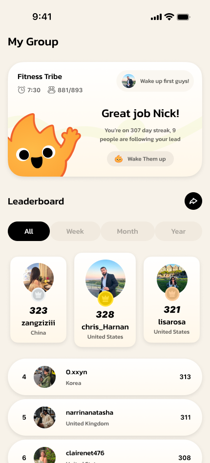
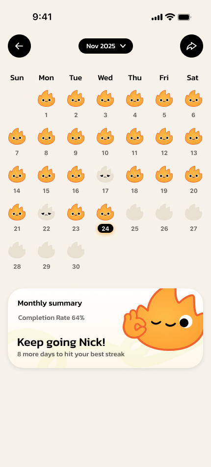
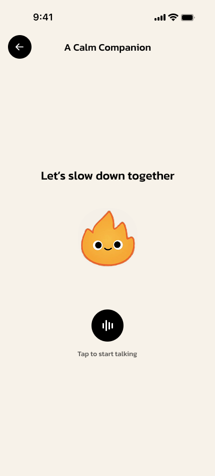
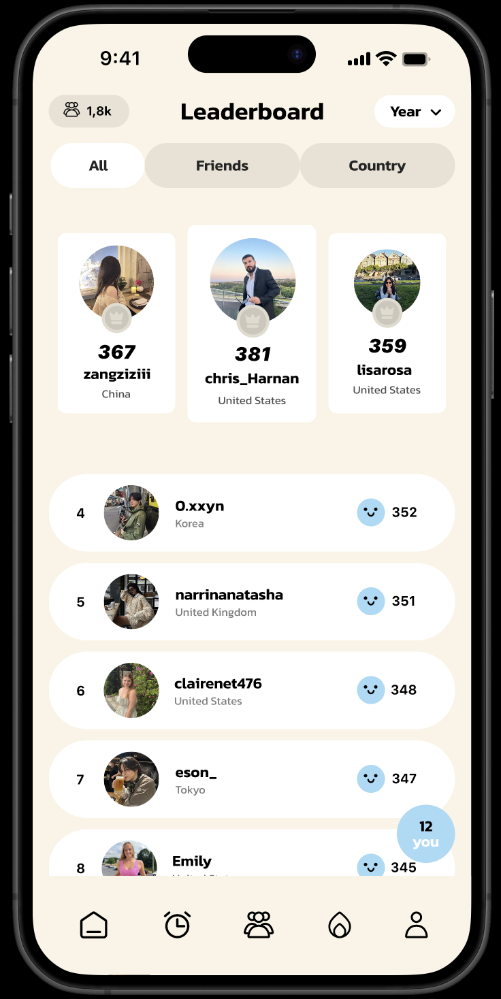
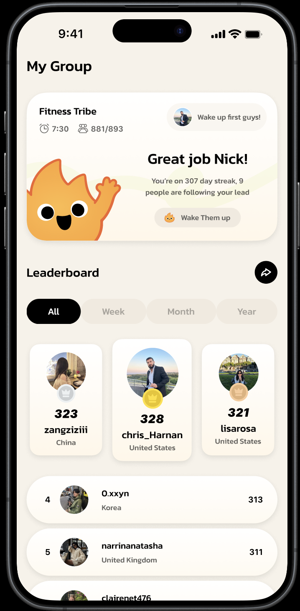
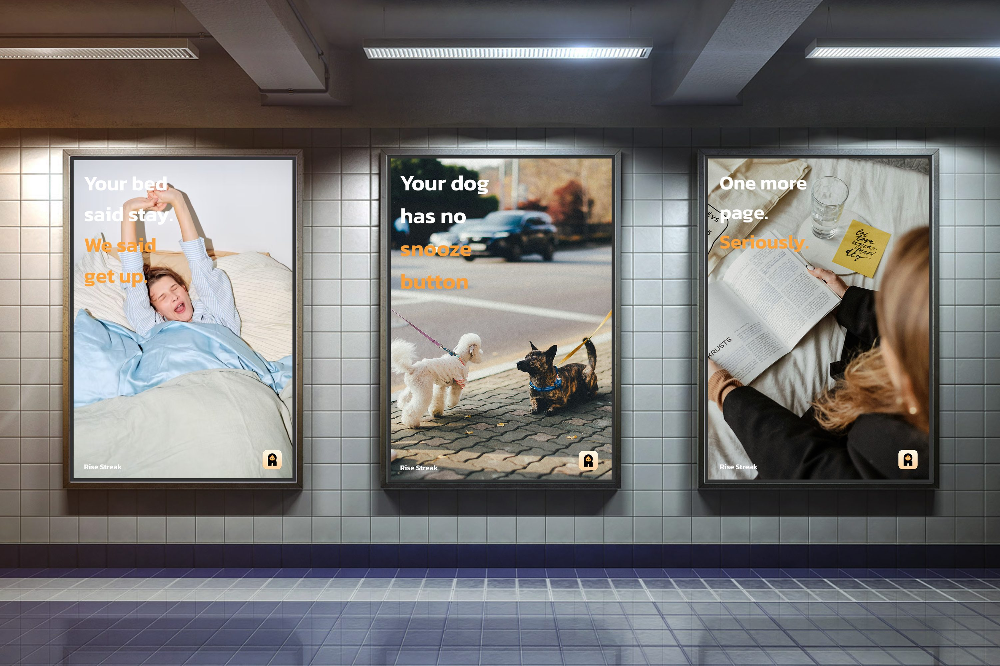

Rise Streak turns everyday progress into something you can see, share, and build on with others.
The Problem


0
User Interviews
0
Survey Responses
Not natural early risers
Night phone use is the barrier
Encouragement drives success
Solution
How might we design a system that supports behavior instead of pressuring it?




Final Experience
Flow 1
Preparing for tomorrow
- Set wake-up time same time, every day
- Choose routine one less thing to decide
Flow 2
Morning check-in
- Wake up the cue that starts the day
- Check status you know right away
- Log progress the streak grows
Flow 3
Social motivation
- View group you can see who else is up
- See ranking a nudge, not a scoreboard
- Receive encouragement someone noticed
01Emotional Rewards
02Flame Companion
03Group Momentum

Design System
Color
#FDA739
#FAF8F5
#D2EB88
#1A1A1A
Type
Kanit
Headings & Display
Semibold · 17px
SF Compact Text
Body & Interface
Semibold · 13px
Icons
Mascot
Testing
Home
Before

After

Rank
Before

After

Campaign

Support, not pressure.